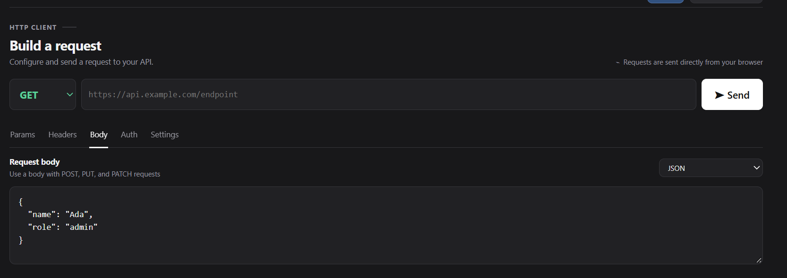

JSON
Use for structured data when an API expects JSON. It is common for creating or updating resources.
{
"name": "Ada",
"role": "admin"
} apidesk
apideskThe body carries data to the server. Choose a format that matches what the endpoint expects.
Open the Body tab for methods such as POST, PUT and PATCH, then select a format from the body type menu.
Use for structured data when an API expects JSON. It is common for creating or updating resources.
{
"name": "Ada",
"role": "admin"
}Use for simple form fields encoded as key-value pairs. Some token and older endpoints expect this format.
username=ada&active=trueUse for multipart form submissions, especially when the request includes file uploads.
Use for plain text or a custom payload when the API does not expect a structured form.
Plain text or custom payloadUse for GraphQL endpoints. Enter a query and include variables when the operation needs them.
{ books { title author } }Check the endpoint documentation for its expected body format. The selected type controls how APIDesk formats the request.
